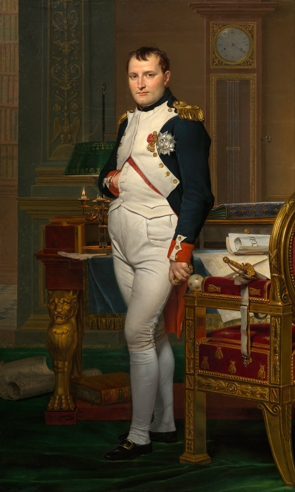
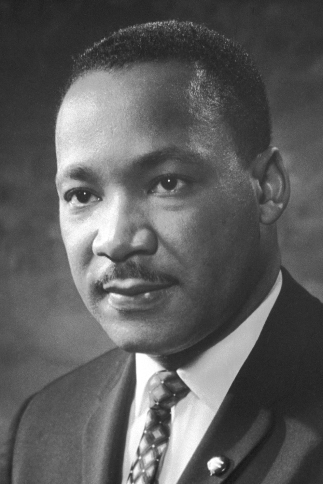

Existen cientos de personajes ilustres y famosos que han influido de manera decisiva en el mundo, ya sea con sus ideas, inventos, acciones o descubrimientos. Estos personajes históricos han marcado el desarrollo de la Historia, haciendo que la sociedad se haya transformado para bien o para mal.
Nombre
Nacionalidad
Hazaña
Cristóbal Cólon
Italiano
Descubrio America
Miguel Ángel
Italiano
Gran artista renacestista
Miguel de Cervantes
Español
Gran escritor de la literatura española
Isaac Newton
Britanico
Padre de la ley de la gravedad y la física clásica
Amadeus Mozart
Austriaco
Gran musico de la musica clásica
Napoleón Bonaparte
Frances
Gran estratega militar de la edad moderna
Charles Darwin
Britanico
El autor de la teoría de la evolución
Louis Pasteur
Frances
Gran quimico con su tecnica de pasteurización y el desarrolló la teoría germinal de las enfermedades infecciosas.
Marie Curie
Polaco
Ser pionera en el campo de la radiactividad y hacer los primeros estudios sobre el fenómeno de la radiactividad
Martin Luther King
Estadounidense
Luchar por los Derechos Civiles para los afroamericanos ser activista en contra de la pobreza general y la Guerra del Vietnam
Cristóbal Colón (1451 – 1506)
El navegante y cartógrafo al servicio de la Corona de Castilla fue el encargado de dirigir la exploración que daría como resultado el descubrimiento de América. La Edad Moderna, y junto con ella la globalización, empieza el 12 de octubre de 1492, momento en el que desembarcan en la Isla Guanahani (actual Bahamas). Realizó un total de cuatro viajes antes de morir, el 20 de mayo de 1506.
Miguel Ángel (1475 – 1564)
El pintor, escultor y arquitecto renacentista es el responsable de obras de alcance universal como El David o la bóveda de la Capilla Sixtina. El perfeccionismo fue su principal característica, el cual le llevó a una reputación como pocos artistas tuvieron en vida. Murió a los 88 años de edad, tras una carrera de más de 70 años ligada al arte.
Miguel de Cervantes (1547 – 1616)
Considerado uno de los escritores más importantes de la literatura universal, Miguel de Cervantes es el autor más importante de la literatura española. Su principal obra, El ingenioso hidalgo don Quijote de la Mancha (1605-1615), es la primera novela moderna y el segundo libro más editado y traducido del mundo, solo después de la Biblia. Cervantes participó en la batalla de Lepanto y estuvo preso en Argel durante cinco años.
Isaac Newton (1643 – 1727)
Considerado por muchos el científico más importante de todos los tiempos, Isaac Newton es el padre de la ley de la gravitación universal y de la física clásica. Sus aportes en el cálculo, las matemáticas, la luz y la óptica lo convirtieron en un referente ya en su tiempo. También escribió algunos tratados de alquimia y teología. Murió a los 84 años a causa de un cólico nefrítico.
Amadeus Mozart (1756 – 1791)
Genio indiscutible de la historia de la música, Mozart se le considera el máximo exponente del estilo clásico, con una amplia obra a pesar de su temprana muerte (tan solo a los 35 años). Sobre esta han surgido no pocas especulaciones, sin que por supuesto sobren las teorías sobre envenenamiento. Su obra en la actualidad es tan elogiada como entonces.
Napoleón Bonaparte (1796 – 1821)

Considerado uno de los mayores estrategas militares de la Edad Moderna, Napoleón Bonaparte jugó un papel decisivo en el reordenamiento político administrativo de la Europa de principios del silo XIX. Fue proclamado Emperador de los franceses y Rey de Italia. Murió en mayo de 1821.
Charles Darwin (1809 – 1882)
El autor de El origen de las especies (1859) cimentó las bases de lo que hoy se conoce como teoría de la evolución. En la actualidad, sus ideas, como la selección natural, son ampliamente aceptadas por la ciencia. Las observaciones que le llevaron a postular su teoría las hizo después del viaje del Beagle, circunnavegación de casi cinco años en la cual pudo recorrer gran parte del globo.
Louis Pasteur (1822 - 1895)
Fue un químico francés cuyos descubrimientos tuvieron un enorme impacto en los diversos campos de las ciencias naturales. A él se le debe honor a la técnica de “pasteurización”. Además, rechazó categóricamente la teoría de la generación espontánea y desarrolló la teoría germinal de las enfermedades infecciosas.
Marie Curie (1867 – 1934)
Curie es la científica más conocida en la cultura popular, gracias al resurgimiento de sus descubrimientos las últimas décadas. Fue la primera persona en recibir dos premios Nobel diferentes, uno en Física (por su contribuciones en el campo de la radicación) y otro en Química (por sus estudios en torno al radio y al polonio). Curie murió de anemia aplásica a los 66 años en Francia.
Martin Luther King (1929 - 1968)

Fue un pastor estadounidense de la iglesia Bautista que desarrolló una labor crucial en Estados Unidos al frente del Movimiento por los Derechos Civiles para los afroamericanos y que, además, participó como activista en contra de la pobreza general y la Guerra del Vietnam. Es uno de los referentes de la lucha contra el racismo en los Estados Unidos.
Autor de la pagina
Alfonso Nuñez Barrios.
Si le gusto la pagina no olvide de encender la bombilla muchas gracias por ver nuestra pagina web